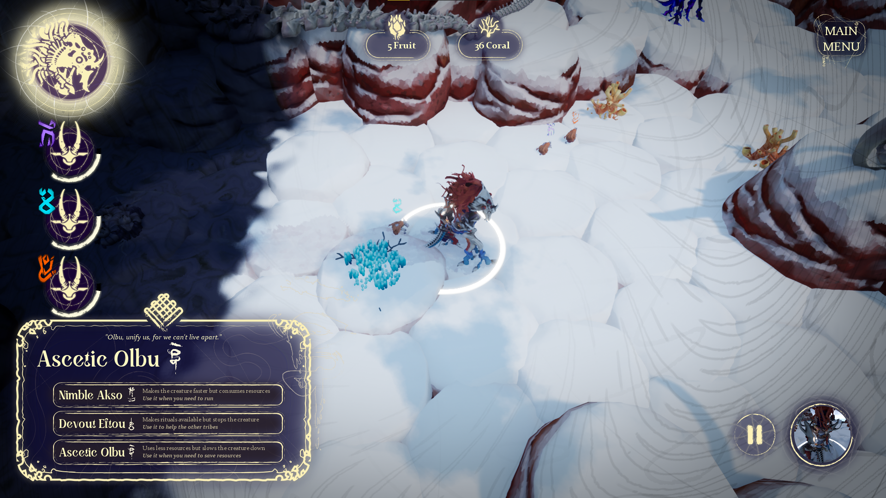

Tribe of Dawn
- Unreal Engine
- C++
Tribe of Dawn is a project I was part of as Tool/Gameplay programmer, during my 2nd year at CNAM-ENJMIN. The project had around 13 team members. I've focused on the generation of the terrain with ressources.

Fleeing the dangerous night, your tribe must keep moving and protect its sacred beast. The other tribes were disbanded, only the Tribe of Dawn remains. Will it be able to reunite them ?
Tribe of Dawn is a nomadic, strategic survival game, focusing on movement and spiritual connection. You will control a tribe that is living on a Sacred Beast, which is fleeing from a dangerous night, and thus, continuously moving around the world.
